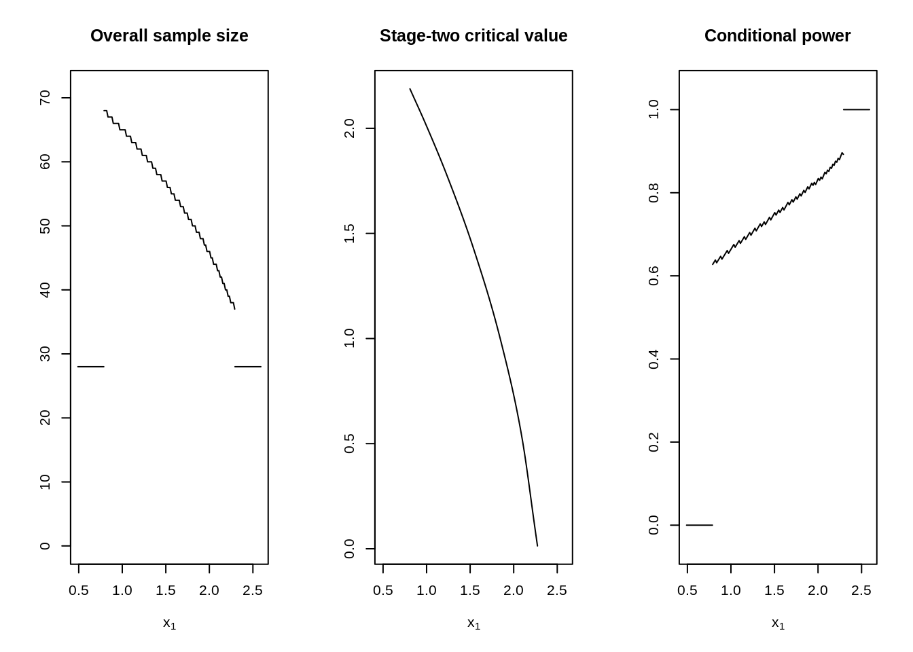

In prospectively planned confirmatory clinical trials there has been a long-standing debate about the merits of allowing pre-planned interim analyses to stop or modify an ongoing trial, cf. BAUER et al., 2016. It is common consensus that such two-stage designs should still maintain strict control of the maximal type one error rate despite the data dependent decision at the interim analysis. Most authors use combination function approaches to combine either the independent p values or test statistics from the respective stages. Doing so with pre-specified weights maintains the type one error rate control.
With adoptr we provide tools to explore optimal two-stage designs for one or two-arm clinical trials with (asymptotically) normally distributed and stage-wise independent test statistics. In Pilz et al., 2019, it was argued that such techniques are not necessary, in fact, that they are counter-productive, since the pre-specified weights might be sub-optimal. Instead, one may see the problem of defining an optimal two-stage designs as a variational problem to find the optimal configuration \[ \mathcal{D}:=\big(n_1, c_1^e, c_1^f, n_2(\cdot), c_2(\cdot)\big) \] directly for a given objective function and potentially a set of constraints. The relaxation of this mixed-integer problem to the real numbers can then be solved with standard methods from analysis. E.g., one could construct an implicit solution by solving the corresponding Euler-Lagrange equation for given first-stage and then find an optimal first-stage configuration, cf. Pilz et al., 2019. Instead, the adoptr package implements a direct numerical solution algorithm by embedding the variation problem via a set of pivot points in the \(\mathbb{R}^k\) and solving the corresponding finite-dimensional problem using gradient-free numerical optimization procedures (COBYLA / nloptr).
Consider the two-arm case comparing two group means mean. Let \(\delta\) be the difference in means and assume that the aim is to reject the null hypothesis \(\mathcal{H}_0: \delta \leq 0\). Further assume that a power of 80% at \(\delta=0.4\) and a type-one-error rate of 2.5% on the boundary of the null hypothesis \(\delta\leq0.0\) is required.
In this situation, the one-sided t-test would require a sample size of \(51\) individuals per-group. If we were willing to accept the fact that the sample size of a two-stage design is inherently unknown at the planning stage, we could reduce the expected sample size under the alternative by optimizing a two-stage design with respect to this quantity. Since the two-stage design, by definition, has more degrees of freedom than the single-stage design, it must be at least as good in terms of expected sample size as the single-stage design - for which the expected sample size is always 51.
library(adoptr)
First, we define the null and alternative hypotheses as prior distributions over the unknown parameter \(\delta\).
H_0 <- PointMassPrior(.0, 1) H_1 <- PointMassPrior(.4, 1)
Next, we define the data-generating mechanism (data distribution). Currently, normally distributed test statistics with known variance, and the normal approximation of binary endpoints are supported. In this example, we choose a normal distribution, i.e., assume a continuous outcome. For an example with binomial data distribution, cf. the vignette composite scores.
datadist <- Normal(two_armed = FALSE)
We begin by defining the expected sample size under the alternative hypothesis:
ess <- ExpectedSampleSize(datadist, H_1)
Similarly, we can define the power and the type-one-error rate by integrating conditional power with respect to the alternative or null hypothesis respectively:
To complete the problem specification, we only need to provide an initial design and an integration order for the Gaussian quadrature rule to be used for the numerical integration of the variational objective between \(c_1^f\) and \(c_1^e\). adoptr provides a heuristic method to obtain an initial design. It is based on a one-stage design under specific constraints on type one error rate and power. However, it may be more efficient to use a situation-specific initial design.
initial_design <- get_initial_design( theta = .4, alpha = .025, beta = .2, type = "two-stage", dist = datadist, order = 7L )
The decision boundaries are heuristically picked in concordance with those of the single-stage design. We can then check whether the initial design fulfills the constraints on the operating characteristics:
evaluate(power, initial_design) #> [1] 0.9401854
evaluate(toer, initial_design) #> [1] 0.0246875
We can now proceed with defining and solving the optimization problem:
opt_res <- minimize( ess, subject_to( power >= 0.8, toer <= .025 ), initial_design )
Here, the default setting for the optimizer and box constraints seem to have worked out. The numerical procedure converged after
opt_res$nloptr_return$iterations
iterations.
We can plot the resulting optimized design may again be plotted together with its conditional power.
plot( opt_res$design, "Conditional power" = ConditionalPower(datadist, H_1) )

Numerical integration yields an expected sample size of
evaluate(ess, opt_res$design) #> [1] 39.85583
which is way below the single-stage 51. We can check this results against simulated values
df_sim <- simulate( opt_res$design, nsim = 10^6, dist = datadist, theta = .4, seed = 42 ) n <- df_sim$n1 + df_sim$n2 mean(n) #> [1] 39.83997 sd(n) / sqrt(length(n)) #> [1] 0.01372659
The values from simulation and numerical integration are almost identical and the constraints are also met almost perfectly:
The purpose of adoptr is to provide a high-level interface for exploring and comparing different designs and to experiment with different combinations of objective functions and constraints. In particular, adoptr supports:
Important predefined scores as (conditional) power or sample size functions as well as a framework for constraints on scores (cf. conditional scores).
Arbitrary continuous or discrete prior distributions for the single location parameter \(\theta\) of the test statistic.
Support for simple arithmetic operations on scores to quickly define weighted sums etc. (cf. composite scores).
Relatively flexible framework for defining new scores.